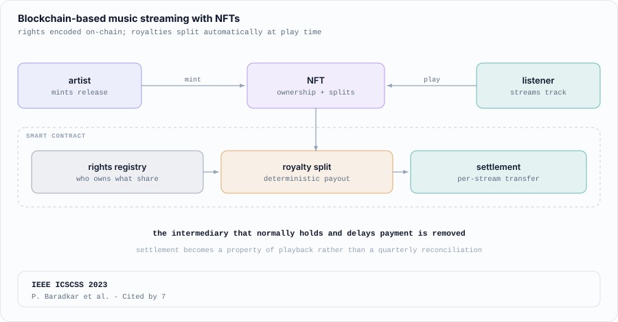
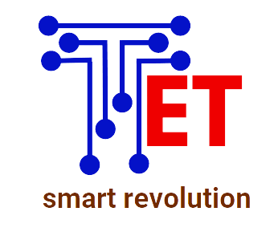

Blockchain Based Music Streaming Platform Using NFTs Cited by 7
A blockchain-based music streaming platform leveraging NFTs for rights management and royalty distribution, enabling transparent and automated compensation for artists.
Architected an end-to-end personalized discovery feed over 450K+ items, and cut cold-feed latency from 8 s to 500 ms.
Monocular SLAM for assistive smart glasses: a C++ GTSAM pose-graph backend cut trajectory error from 29–58 m to 0.09–0.24 m.
Evaluating Database Systems coursework for 200+ students under Prof. Shahram Ghandeharizadeh.
On-device clinical vision for micro-lesion detection (0.83 mAP@0.5) and deterministic acne grading, with ~40% faster edge inference.

Built backend services and APIs supporting scalable data pipelines and cloud-based ML workflows.

A blockchain-based music streaming platform leveraging NFTs for rights management and royalty distribution, enabling transparent and automated compensation for artists.

Paper presentation. Loss-threshold attacks made masked LMs look safe; a likelihood-ratio test against a reference model, scored as an energy gap, lifts attack AUC on ClinicalBERT from 0.66 to 0.90, and to 0.99 per patient.